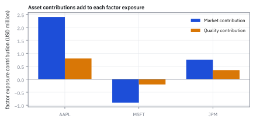

7.1 What a Matrix Is
matrix คือตารางตัวเลขที่ทุกแถวและทุกคอลัมน์มีชื่อกับหน่วย และเมื่อคูณกับ vector มันคือเครื่องที่แปลง input หลายช่องเป็น output หลายช่องในคราวเดียว
ทุกเช้า หัวหน้าทีมเทรด (desk) อยากรู้เร็ว ๆ ว่า ถ้าตลาดหุ้นทั้งตลาดขยับ พอร์ตของทีมจะได้หรือเสียเงินเท่าไร “ตลาดขึ้น 1%” ในที่นี้แปลว่าดัชนีที่วัดหุ้นทั้งตลาด เช่น S&P 500 ขึ้น 1% จากเมื่อวาน
คำที่ต้องรู้ก่อน
- long คือซื้อหุ้นไว้ ราคาขึ้นเราได้เงิน ราคาลงเราเสียเงิน
- short คือยืมหุ้นของคนอื่นมาขายก่อน แล้วซื้อคืนทีหลังเพื่อคืนเจ้าของ ราคาลงเราได้เงิน ราคาขึ้นเราเสียเงิน เงินที่ short ไว้จึงเขียนเป็นค่าติดลบ
- net position คือเงินที่ long ทั้งหมด ลบเงินที่ short ทั้งหมด
พอร์ตของทีม (ตัวเลขสมมติ)
- long AAPL (Apple) \$2 ล้าน
- short MSFT (Microsoft) \$1 ล้าน
- long JPM (ธนาคาร JPMorgan) \$0.5 ล้าน
net position ของพอร์ตนี้คือ $2-1+0.5=\$1.5$ ล้าน
เช้านี้ตลาดขึ้น 1% พนักงานใหม่คิดว่า ตลาดขึ้น 1% พอร์ตก็ควรได้ 1% ของ net position จึงรายงานว่าได้ $1{,}500{,}000\times0.01=\$15{,}000$
ตัวเลข \$15,000 นี้ถูกไหม?
ลองตอบก่อนเปิดเฉลย
ไม่ถูก เพราะหุ้นแต่ละตัวไม่ได้ขยับเท่ากับตลาดพอดี บางตัวขยับแรงกว่า บางตัวขยับเบากว่า ตัวเลขที่บอกว่าหุ้นตัวหนึ่งไวต่อตลาดแค่ไหนเรียกว่า loading เช่น loading 1.2 แปลว่า ตลาดขึ้น 1% หุ้นตัวนั้นขึ้นประมาณ 1.2% สมมติว่า loading ของ AAPL, MSFT และ JPM คือ 1.2, 0.9 และ 1.5 เงินที่หุ้นแต่ละตัวทำให้พอร์ตได้ คือเงินที่ถือ คูณ % ที่หุ้นตัวนั้นขยับ
กำไรส่วนที่มาจากตลาดจึงเป็น \$22,500 ไม่ใช่ \$15,000 ตัวเลข \$15,000 แอบสมมติว่าหุ้นทุกตัวมี loading เท่ากับ 1 คือขยับเท่าตลาดพอดี ซึ่งไม่จริงในพอร์ตนี้ หน้านี้จะแสดงว่า การคำนวณแบบนี้คือการคูณ matrix กับ vector
ภาพรวมก่อนลงสูตร
ใน hook หุ้นขยับตามตลาดอย่างเดียว แต่หุ้นจริงโดนแรงหลายแรงพร้อมกัน แรงร่วมที่ดันหุ้นหลายตัวให้ขยับไปด้วยกันเรียกว่า factor (อ่านเต็ม ๆ ได้ที่ สมการ factor model) หน้านี้ใช้ factor สองตัว ทั้งคู่เป็นตัวอย่างสมมติ
- Market คือการขยับของตลาดทั้งตลาด วัดด้วยผลตอบแทนของดัชนี เช่น S&P 500
- Quality คือผลตอบแทนของกลุ่มบริษัทที่แข็งแรง (กำไรสม่ำเสมอ หนี้น้อย) ลบผลตอบแทนของกลุ่มบริษัทที่อ่อนแอ วันที่ Quality เป็นบวก คือวันที่บริษัทแข็งแรงชนะบริษัทอ่อนแอ
ตัวเลขที่ factor ขยับในหนึ่งวัน เช่น Market +1% เรียกว่า factor return หรือ factor shock
คำตอบของ hook มาจากตารางเล็ก ๆ หนึ่งตาราง แถวคือหุ้นสามตัว คอลัมน์คือ factor สองตัว ช่องที่แถว AAPL ตัดกับคอลัมน์ Market ตอบคำถามเดียว คือ “ถ้า Market ขยับ 1% AAPL ขยับกี่ %” ตัวเลขในช่องนี้คือ loading ที่เจอใน hook ตารางแบบนี้เรียกว่า matrix ตัวเลขข้างในไม่มีความหมายเลย ถ้าไม่รู้ว่าแถวไหนคือหุ้นอะไร คอลัมน์ไหนคือ factor อะไร และหน่วยคืออะไร
matrix ไม่ได้มีไว้เก็บตัวเลขเฉย ๆ มันทำงานเหมือนเครื่องแปลงที่ใช้ได้สองทิศ
- ทิศไป: ใส่ factor shock สองตัวเข้าไป ได้ผลตอบแทนของหุ้นสามตัวออกมา
- ทิศกลับ: ใส่เงินที่ถือในหุ้นสามตัวเข้าไป ได้ความไวของทั้งพอร์ตต่อ factor สองตัวออกมา ทิศนี้คือคำถามของ hook
รูปด้านล่างวาดตารางนี้เป็นสายไฟ หนึ่งเส้นคือหนึ่งช่องของตาราง
หน้านี้สร้างเครื่องมือทีละชิ้น
- เรียกขนาดของตาราง และชี้ช่องให้ถูก
- คูณ matrix กับ vector แบบทีละแถว แล้วอ่านผลเดียวกันแบบทีละคอลัมน์
- เดินทิศกลับ เพื่อหาความไวของพอร์ต (exposure) และตอบ hook
- ตาราง payoff ที่แถวคือสิ่งที่อาจเกิดขึ้นพรุ่งนี้
- เหตุผลว่าทำไมฟังก์ชันเชิงเส้นทุกตัวเขียนเป็น matrix ได้
- ใช้ตารางตั้งสมการ เพื่อหาพอร์ตที่ไม่สะเทือนเมื่อ factor ขยับ
รูป — matrix คือสายไฟที่ต่อ factor เข้ากับหุ้น
ศัพท์ที่ใช้ในหัวข้อนี้
- Matrix และขนาด $m\times n$
- ตารางตัวเลขที่มี $m$ แถว และ $n$ คอลัมน์ เวลาบอกขนาด บอกจำนวนแถวก่อนเสมอ ใช้เก็บความสัมพันธ์ระหว่างของสองกลุ่ม เช่น หุ้นกับ factor หรือสิ่งที่อาจเกิดพรุ่งนี้กับสินทรัพย์
- Entry $a_{ij}$
- ตัวเลขที่อยู่ในแถว $i$ คอลัมน์ $j$ ตัวห้อยตัวแรกคือแถว ตัวที่สองคือคอลัมน์ ใช้ชี้ช่องที่ต้องการโดยไม่กำกวม
- Row vector และ column vector
- row vector คือ matrix ที่มีแถวเดียว (ขนาด $1\times n$) column vector คือ matrix ที่มีคอลัมน์เดียว (ขนาด $n\times1$) vector จึงเป็น matrix ชนิดหนึ่ง หน้านี้ใช้ column vector แทนของที่ใส่เข้าเครื่อง (input) และของที่ได้ออกมา (output)
- Factor และ factor return
- factor คือแรงร่วมที่ดันหุ้นหลายตัวให้ขยับไปด้วยกัน เช่น การขยับของตลาดทั้งตลาด factor return (หรือ factor shock) คือ % ที่ factor ขยับในหนึ่งงวด
- Loading และ exposure
- loading คือความไวของหุ้นหนึ่งตัวต่อ factor หนึ่งตัว: factor ขยับ 1% หุ้นขยับกี่ % exposure คือความไวของทั้งพอร์ต คือเงินที่ถือในหุ้นแต่ละตัวคูณ loading แล้วบวกกัน ใช้ตอบว่าพอร์ตจะได้หรือเสียเงินเท่าไรเมื่อ factor ขยับ
- Payoff matrix
- ตารางที่แถวคือสิ่งที่อาจเกิดขึ้นในอนาคต (เรียกว่าสถานะ เช่น ตลาดขึ้น กลาง ลง) คอลัมน์คือสินทรัพย์ แต่ละช่องคือเงินที่สินทรัพย์หนึ่งหน่วยจ่ายในสถานะนั้น ใช้ตั้งโจทย์ hedge
- Hedge
- การถือสินทรัพย์อีกตัวไว้ เพื่อให้พอร์ตเสียหายน้อยลงเมื่อราคาขยับผิดทาง
- Identity matrix $I_n$
- matrix จัตุรัสขนาด $n\times n$ ที่มี 1 บนแนวทแยง (จากมุมซ้ายบนลงมุมขวาล่าง) และ 0 ที่อื่น คูณกับ vector ไหนก็ได้ vector เดิมกลับมา เหมือนเลข 1 ในการคูณตัวเลข
- Linear function
- ฟังก์ชันที่มีสองสมบัติ ใส่ input สองเท่า ได้ output สองเท่า และใส่ input สองก้อนรวมกัน ได้ output เท่ากับทำทีละก้อนแล้วบวกกัน ฟังก์ชันแบบนี้ทุกตัวเขียนเป็น matrix ได้
สัญลักษณ์และหน่วย
| สัญลักษณ์ | ความหมาย | หน่วย |
|---|---|---|
| $A$ | ตาราง loading ขนาด $3\times2$ แถวเรียง AAPL, MSFT, JPM คอลัมน์เรียง Market, Quality | ไม่มีหน่วย |
| $\mathbf f$ | factor return สองตัว เรียง Market, Quality | เศษส่วน (0.01 คือ 1%) |
| $\widehat{\mathbf r}$ | ผลตอบแทนของหุ้นสามตัวที่ factor อธิบายได้ หมวกบน $\widehat r$ แปลว่าค่าที่แบบจำลองคำนวณ ไม่ใช่ค่าจริง | เศษส่วน |
| $\mathbf w$ | เงินที่ถือในหุ้นสามตัว ติดลบคือ short | ล้านดอลลาร์ |
| $\mathbf e$ | exposure ของพอร์ตต่อ factor สองตัว คูณกับ factor return แล้วได้เงินที่พอร์ตได้หรือเสีย | ล้านดอลลาร์ ต่อ factor return 1.00 (คือ 100%) |
| $S$ | payoff matrix แถวคือสถานะ คอลัมน์คือสินทรัพย์ | ดอลลาร์ต่อหน่วยสินทรัพย์ |
| $\boldsymbol\theta$, $\mathbf p$ | จำนวนหน่วยที่ถือ และราคาวันนี้ต่อหน่วย | หน่วย, ดอลลาร์ |
| $\mathbf y$ | เงินที่พอร์ตได้รับพรุ่งนี้ในแต่ละสถานะ | ดอลลาร์ |
ขั้นที่ 1 — ขนาด ชื่อเรียก และการชี้ช่อง
ก่อนจะคูณหรือพลิกตาราง ต้องเรียกชื่อตารางและชี้ช่องให้ถูกก่อน เพราะความผิดที่เจอบ่อยที่สุดกับ matrix คือหยิบเลขผิดช่อง ขั้นนี้ใช้ตารางเล็ก ๆ ชื่อ $M$ ซึ่งยังไม่มีความหมายทางการเงิน $M$ มีสองแถว สามคอลัมน์ จึงเรียกว่าขนาด $2\times3$ (อ่านว่า “สองคูณสาม”) จำนวนแถวมาก่อนจำนวนคอลัมน์เสมอ ช่องในแถว $i$ คอลัมน์ $j$ เขียนว่า $m_{ij}$
$m_{23}$ คือเลขในแถวที่ 2 คอลัมน์ที่ 3 ของ $M$ ซึ่งคือ 5 ตัวห้อยตัวแรกคือแถว ตัวที่สองคือคอลัมน์ ถ้าสลับเป็น $m_{32}$ จะชี้ไปแถวที่ 3 ซึ่งไม่มีอยู่ เพราะ $M$ มีแค่สองแถว
ในโค้ด JavaScript การนับแถวและคอลัมน์เริ่มที่ 0 ไม่ใช่ 1 ช่องเดียวกันจึงเขียนว่า M[1][2] ไม่ใช่ M[2][3] ถ้าตารางใหญ่พอ โปรแกรมจะไม่ฟ้อง error แต่หยิบเลขผิดช่องมาใช้เงียบ ๆ
row vector และ column vector ก็เป็น matrix เหมือนกัน คือ matrix ที่มีแถวเดียว (ขนาด $1\times n$) และ matrix ที่มีคอลัมน์เดียว (ขนาด $n\times1$) ส่วน $I_3$ คือ identity matrix ขนาด $3\times3$ มี 1 บนแนวทแยงและ 0 ที่อื่น พอเรียนการคูณ matrix กับ vector อีกสองขั้นข้างหน้า จะเห็นว่า $I_3$ คูณกับ vector ไหนก็ได้ vector เดิมกลับมา เหมือนเลข 1 ในการคูณตัวเลข
ขั้นที่ 2 — ตาราง loading ที่มีชื่อและหน่วยครบ
ตอนนี้เอาตัวเลขบนสายไฟในรูปมาเขียนเป็นตาราง เพื่อให้คำนวณได้ ตั้งชื่อตารางว่า $A$ แถวเรียง AAPL, MSFT, JPM คอลัมน์เรียง Market, Quality ตัวเลขทั้งหมดเป็นตัวเลขสมมติ ไม่ใช่ค่าที่ประมาณจากตลาดจริง
$A$ มีสามแถว สองคอลัมน์ จึงมีขนาด $3\times2$ ช่อง $a_{31}=1.5$ อยู่ในแถว JPM คอลัมน์ Market แปลว่า ถ้า Market ขยับ 1% JPM จะขยับ 1.5% เฉพาะส่วนที่มาจาก Market ช่อง $a_{12}=0.4$ อยู่ในแถว AAPL คอลัมน์ Quality แปลว่า ถ้า Quality ขยับ 1% AAPL จะขยับ 0.4%
ตารางเดียวอ่านได้สองแนว อ่านตามแถว เช่นแถว AAPL จะเห็นว่าหุ้นหนึ่งตัวไวต่อ factor แต่ละตัวแค่ไหน อ่านตามคอลัมน์ เช่นคอลัมน์ Market จะเห็นว่า factor หนึ่งตัวกระทบหุ้นแต่ละตัวแรงแค่ไหน
หน่วยต้องตกลงกันก่อนใช้ หน้านี้วัดทั้ง factor return และผลตอบแทนหุ้นเป็นเศษส่วน (0.01 คือ 1%) ในช่วงเวลาเดียวกัน loading คือผลตอบแทนหุ้น (ส่วนที่มาจาก factor นั้น) หารด้วย factor return เศษส่วนหารด้วยเศษส่วน loading จึงไม่มีหน่วย ถ้าวันหนึ่งระบบส่ง factor return มาเป็นเปอร์เซ็นต์ (ส่ง 1 แทน 0.01) แต่ผลตอบแทนหุ้นยังเป็นเศษส่วน ทุกช่องของ $A$ ต้องหารด้วย 100 ตาม ดูตัวอย่าง AAPL เมื่อ Market ขึ้น 1% เดิม AAPL ขยับ $1.2\times0.01=0.012$ ระบบใหม่ส่ง factor return มาเป็น 1 แต่ AAPL ยังต้องขยับ 0.012 เท่าเดิม loading ใหม่จึงต้องเป็น $1.2/100=0.012$ เพื่อให้ $0.012\times1=0.012$
ระวังอีกเรื่อง: จะเทียบ 1.2 กับ 0.4 แล้วบอกว่า AAPL เสี่ยงต่อ Market มากกว่าต่อ Quality สามเท่า ($1.2/0.4=3$) ไม่ได้ เพราะ loading บอกแค่ว่า factor ขยับ 1% หุ้นขยับเท่าไร แต่ factor สองตัวมีความผันผวนไม่เท่ากัน Market อาจขยับ 1% บ่อย ๆ ขณะที่ Quality นาน ๆ ทีจะขยับถึง 1%
ขั้นที่ 3 — คูณ matrix กับ vector: หนึ่งแถวให้หนึ่งคำตอบ
ตารางมีไว้ตอบคำถาม คำถามแรกคือ ถ้าวันนี้ Market ขึ้น 1% และ Quality ลง 2% หุ้นแต่ละตัวควรขยับเท่าไร คำว่า “ควร” ในที่นี้มาจากแบบจำลอง (model) ของหน้านี้ ซึ่งสมมติว่า ผลตอบแทนของหุ้น เท่ากับ loading คูณ factor return ของแต่ละ factor แล้วบวกกัน
เก็บ factor return สองตัวไว้ใน column vector $\mathbf f$ ช่องบนคือ Market $f_1=0.01$ ช่องล่างคือ Quality $f_2=-0.02$ เพื่อประหยัดที่ เขียนแนวนอนว่า $\mathbf f=(0.01,-0.02)^{\mathsf T}$ ตัว $^{\mathsf T}$ บอกว่าจริง ๆ แล้วมันตั้งเป็นคอลัมน์ จากนั้นให้แต่ละแถวของ $A$ จับคู่กับ $\mathbf f$ ทีละช่อง คูณ แล้วบวก หมวกบน $\widehat r$ บอกว่าเป็นค่าที่แบบจำลองคำนวณ
การคำนวณสามหุ้นข้างบนทำแบบเดียวกันทุกครั้ง จึงเขียนรวมเป็นคำสั่งเดียวได้ว่า $A\mathbf f$ อ่านว่า “$A$ คูณ $\mathbf f$” กติกาคือ ช่องที่ $i$ ของคำตอบ มาจากแถวที่ $i$ ของ $A$ คูณกับ $\mathbf f$ ทีละช่องแล้วบวกกัน ในสูตรข้างล่าง $i$ คือเลขแถว (หุ้น) และ $j$ คือเลขคอลัมน์ (factor)
หุ้นทุกตัวโดนสองแรงดึงคนละทาง Market ดันขึ้น Quality ดึงลง ผลรวมจึงเล็กกว่าที่ Market ดันอย่างเดียว JPM โดนดึงลงแรงที่สุด เพราะ loading ต่อ Quality สูงที่สุด (0.7) จึงเหลือแค่ $0.001=0.1\%$ รูปด้านล่างแสดงสองแรงนี้ของหุ้นทุกตัว
ส่วนท้ายของสูตร $(3\times2)(2\times1)\longrightarrow3\times1$ คือกฎตรวจขนาดก่อนคูณ ตัวเลขด้านในสองตัว (2 กับ 2) ต้องเท่ากัน เพราะแต่ละแถวของ $A$ มีสองช่อง ต้องจับคู่กับ factor return สองตัวพอดี ตัวเลขด้านนอก (3 กับ 1) บอกขนาดของคำตอบ คือหุ้นสามตัว ตัวละหนึ่งค่า ดังนั้น matrix ขนาด $m\times n$ รับ input $n$ ช่อง และให้ output $m$ ช่อง
รูป — ผลตอบแทนของแต่ละหุ้นประกอบจากสองแรง
ขั้นที่ 4 — อ่านอีกแนว: ผลคูณคือผลรวมของคอลัมน์
ขั้นที่แล้วอ่านตารางทีละแถว จึงได้คำตอบทีละหุ้น ขั้นนี้ลองจัดกลุ่มใหม่ตาม factor แทน คือแยกส่วนที่มาจาก Market ทั้งคอลัมน์ ออกจากส่วนที่มาจาก Quality ทั้งคอลัมน์ ผลคูณยังเป็นตัวเดิม แต่จะเห็นข้อสรุปใหม่ที่การอ่านทีละแถวมองไม่เห็น
ได้ตัวเลขชุดเดียวกับขั้นก่อน เพราะใช้ผลคูณหกตัวเดิม แค่บวกคนละลำดับ การเอา vector หลายตัวมาคูณด้วยตัวเลขแล้วบวกกันแบบนี้เรียกว่า linear combination ดังนั้น $A\mathbf f$ คือ linear combination ของคอลัมน์ของ $A$ โดยใช้ช่องของ $\mathbf f$ เป็นตัวคูณ
มุมมองนี้บอกว่า ไม่ว่า factor จะขยับเท่าไร ผลตอบแทนสามหุ้นที่แบบจำลองสร้างได้ ต้องเป็นคอลัมน์ Market คูณตัวเลขหนึ่ง บวกคอลัมน์ Quality คูณอีกตัวเลขหนึ่งเท่านั้น ลองทดสอบ: มี factor return คู่ไหนไหมที่ทำให้ AAPL ขึ้น 1% แต่ MSFT กับ JPM ไม่ขยับเลย ให้ $a$ คือ factor return ของ Market และ $b$ คือของ Quality ขั้นแรกบังคับให้ MSFT เป็นศูนย์ แล้วแทนผลลงใน JPM
เราต้องการให้ JPM เป็นศูนย์ด้วย คือ $-1.65a=0$ จึงได้ $a=0$ แล้ว $b=-4.5\times0=0$ ตามไปด้วย แต่พอทั้งสอง factor ไม่ขยับ AAPL ก็ได้ $1.2(0)+0.4(0)=0$ ขึ้น 1% ไม่ได้ ข้อสรุปคือ แบบจำลองที่มีแค่สอง factor สร้างผลตอบแทนชุด “AAPL +1% ส่วนอีกสองตัวนิ่ง” ไม่ได้เลย
เหตุผลอยู่ที่การนับ ผลตอบแทนสามหุ้นมีสามช่อง แต่เรามีปุ่มให้หมุนแค่สองปุ่ม ($a$ กับ $b$) ผลลัพธ์ที่ทำได้จึงมีแค่บางแบบ คำถามว่าตารางหนึ่ง “ไปถึง” output แบบไหนได้บ้าง คือเรื่อง rank และ range
ขั้นที่ 5 — พลิกทิศคำถาม: จากเงินที่ถือ ไปสู่ exposure ของพอร์ต
ตอนนี้กลับไปที่คำถามของ hook ซึ่งถามกลับทิศ hook ไม่ได้ถามว่าหุ้นแต่ละตัวขยับเท่าไร แต่ถามว่า ทั้งพอร์ตไวต่อตลาดแค่ไหน ของที่ใส่เข้าไปจึงเป็นเงินที่ถือ ไม่ใช่ factor return
ให้ $\mathbf w=(2,-1,0.5)^{\mathsf T}$ คือเงินที่ถือ หน่วยเป็นล้านดอลลาร์ เรียง AAPL, MSFT, JPM ตามแถวของ $A$ ค่าติดลบของ MSFT คือ short ความไวของทั้งพอร์ตต่อ factor หนึ่งตัวเรียกว่า exposure เขียนว่า $e_M$ สำหรับ Market และ $e_Q$ สำหรับ Quality วิธีหาคือเอาเงินแต่ละก้อนคูณ loading ของหุ้นตัวนั้นในคอลัมน์ของ factor นั้น แล้วบวกกัน
เที่ยวนี้เดินสายไฟย้อนทาง จากหุ้นไปหา factor $e_M$ ใช้คอลัมน์ Market ของ $A$ ทั้งคอลัมน์จับคู่กับ $\mathbf w$ ถ้าจะเขียนเป็นการคูณแบบทีละแถวเหมือนขั้นที่ผ่านมา คอลัมน์ของ $A$ ต้องพลิกมาเป็นแถวก่อน การพลิกตารางให้คอลัมน์กลายเป็นแถวเรียกว่า transpose เขียนว่า $A^{\mathsf T}$ ซึ่งมีขนาด $2\times3$ จึงคูณกับ $\mathbf w$ ที่มีสามช่องได้
$e_M=2.25$ มีหน่วยเป็นล้านดอลลาร์ต่อ factor return 1.00 (คือ 100%) เช้านี้ Market ขึ้น $0.01$ พอร์ตจึงได้ $2.25\times0.01=0.0225$ ล้าน หรือ \$22,500 ตรงกับเฉลยของ hook ส่วน $e_Q=0.95$ อ่านแบบเดียวกัน ถ้า Quality ขึ้น 1% พอร์ตได้ $0.95\times0.01=0.0095$ ล้าน หรือ \$9,500
ดูที่มาของ 2.25 ขา short ของ MSFT หักออก $(-1)(0.9)=-0.90$ แต่ JPM ที่ถือแค่ \$0.5 ล้านเติมกลับมาถึง $0.5\times1.5=0.75$ เพราะ loading สูง เงินที่ถือกับความไวจึงเป็นคนละเรื่อง net position \$1.5 ล้านนับแค่เงิน ส่วน exposure 2.25 ล้านนับเงินคูณความไว
รูป — ส่วนร่วมของแต่ละหุ้นต่อ exposure

ขั้นที่ 6 — กำไรขาดทุนจากแบบจำลอง นับได้สองทาง
สมมติวันนี้ทั้งสอง factor ขยับพร้อมกัน คือ Market ขึ้น 1% และ Quality ลง 2% หัวหน้าทีมอยากรู้ว่าพอร์ตได้หรือเสียเงินเท่าไร (เรียกว่ากำไรขาดทุน หรือ P&L) เฉพาะส่วนที่ factor อธิบายได้ ตอนนี้เรามีของพร้อมแล้ว และนับได้สองทาง
โจทย์ให้อะไรมาบ้าง:
- เงินที่ถือ $\mathbf w=(2,-1,0.5)^{\mathsf T}$ ล้านดอลลาร์
- factor return $\mathbf f=(0.01,-0.02)^{\mathsf T}$
- ผลตอบแทนหุ้นจากแบบจำลอง $A\mathbf f=(0.004,0.005,0.001)^{\mathsf T}$ ที่หาไว้ในขั้นคูณ matrix กับ vector
- exposure $\mathbf e=(2.25,0.95)^{\mathsf T}$ ล้านดอลลาร์ ที่หาไว้ในขั้นก่อน
ทางแรกนับทีละหุ้น: เงินที่ถือแต่ละหุ้น คูณผลตอบแทนของหุ้นนั้น แล้วบวกกัน ทางที่สองนับทีละ factor: exposure ต่อ factor แต่ละตัว คูณ factor return ของตัวนั้น แล้วบวกกัน ทั้งสองทางคือการจับคู่ vector สองตัวทีละช่อง คูณ แล้วบวก ซึ่งก็คือ row vector คูณ column vector จึงเขียนทางแรกว่า $\mathbf w^{\mathsf T}(A\mathbf f)$ และทางที่สองว่า $\mathbf e^{\mathsf T}\mathbf f$
คำตอบ: ทั้งสองทางได้ 0.0035 ล้าน หรือ \$3,500 ทางที่สองยังบอกด้วยว่าเงินมาจากไหน Market ให้ $2.25\times0.01=0.0225$ ล้าน คือได้ \$22,500 แต่ Quality ที่ลง 2% ให้ $0.95\times(-0.02)=-0.019$ ล้าน คือเสีย \$19,000 กลับไป
ทำไมสองทางต้องเท่ากันเสมอ? เพราะทั้งคู่บวกผลคูณหกตัว $w_ia_{ij}f_j$ ชุดเดียวกัน ($i$ คือหุ้น สามตัว และ $j$ คือ factor สองตัว) ต่างกันแค่ลำดับการบวก ทางแรกบวกในแต่ละหุ้นก่อน ทางที่สองบวกในแต่ละ factor ก่อน
\$3,500 ยังไม่ใช่กำไรจริงของวัน เพราะหุ้นจริงไม่ได้ขยับตาม factor อย่างเดียว หุ้นยังขยับเองจากเรื่องของบริษัท เช่น ข่าวงบการเงิน ส่วนนี้เขียนว่า $\boldsymbol\varepsilon$ ผลตอบแทนจริงจึงเป็น $\mathbf r=A\mathbf f+\boldsymbol\varepsilon$ และ \$3,500 คือแค่ส่วน $A\mathbf f$
ตรวจเองใน 10 วินาที: ดึง 0.01 ออกมาจากทางที่สอง $0.01\times(2.25-2\times0.95)=0.01\times0.35=0.0035$
ขั้นที่ 7 — payoff matrix: แถวเป็นสถานะของโลก คอลัมน์เป็นสินทรัพย์
ตาราง loading ตอบว่า “ถ้า factor ขยับ หุ้นขยับเท่าไร” ยังมี matrix อีกแบบที่บทนี้ใช้บ่อย มาจากโจทย์ hedge คือการถือสินทรัพย์หลายตัวผสมกัน เพื่อให้พอร์ตไม่เสียหายหนักไม่ว่าพรุ่งนี้จะเกิดอะไรขึ้น
เราไม่รู้ว่าพรุ่งนี้จะเป็นอย่างไร แต่เขียนรายการสิ่งที่อาจเกิดได้ เช่น ตลาดขึ้น ตลาดทรงตัว ตลาดลง แต่ละแบบเรียกว่าสถานะ (state) เงินที่สินทรัพย์จ่ายให้ผู้ถือในวันพรุ่งนี้เรียกว่า payoff ถ้ามีสถานะ $m$ แบบ และสินทรัพย์ $d$ ตัว เราเก็บ payoff ไว้ในตาราง $S$ ขนาด $m\times d$ ช่อง $S_{ij}$ คือเงินที่สินทรัพย์ $j$ หนึ่งหน่วยจ่ายในสถานะ $i$ คอลัมน์ที่ $j$ จึงเป็น payoff ของสินทรัพย์ตัวนั้นในทุกสถานะ
โจทย์ให้อะไรมาบ้าง: (ตัวเลขสมมติทั้งหมด)
- สามสถานะ เรียงเป็น ขึ้น กลาง ลง
- หุ้นหนึ่งหน่วยมีมูลค่าพรุ่งนี้ \$120, \$100 และ \$70 ในสามสถานะ (นับเป็น payoff เพราะพรุ่งนี้ขายได้เงินเท่านั้น)
- bond หนึ่งหน่วยจ่าย \$105 ทุกสถานะ (bond คือตราสารหนี้ที่สัญญาว่าจะจ่ายเงินจำนวนตายตัว)
- ราคาวันนี้หน่วยละ \$100 ทั้งหุ้นและ bond เก็บไว้ใน $\mathbf p=(100,100)^{\mathsf T}$
- พอร์ตถือหุ้น 2 หน่วย และ short bond 1 หน่วย เก็บไว้ใน $\boldsymbol\theta=(2,-1)^{\mathsf T}$ การ short bond คือขาย bond ที่ยืมมาวันนี้ แล้วพรุ่งนี้ต้องจ่าย \$105 คืน จึงเหมือนกู้เงิน
ในแต่ละสถานะ เงินที่พอร์ตได้รับ คือจำนวนหน่วยหุ้นคูณเงินที่หุ้นจ่าย บวกจำนวนหน่วย bond คูณเงินที่ bond จ่าย นี่คือแถวหนึ่งของ $S$ จับคู่กับ $\boldsymbol\theta$ ทีละช่อง payoff ของพอร์ตทั้งสามสถานะจึงเป็น $\mathbf y=S\boldsymbol\theta$ ส่วนเงินที่ต้องจ่ายวันนี้เพื่อตั้งพอร์ต คือราคาคูณจำนวนหน่วยแล้วบวกกัน เขียนว่า $\mathbf p^{\mathsf T}\boldsymbol\theta$
คำตอบ: พอร์ตได้รับเงิน \$135, \$95 และ \$35 ในสถานะขึ้น กลาง ลง และต้องจ่ายวันนี้ \$100 กำไรในแต่ละสถานะคือ payoff ลบเงินที่จ่ายไป ให้ $y_1$, $y_2$, $y_3$ คือช่องของ $\mathbf y$ ในสถานะขึ้น กลาง ลง
$\mathbf y$ คือเงินที่ได้รับพรุ่งนี้ ไม่ใช่กำไร และยังหาค่าเฉลี่ยไม่ได้ เพราะยังไม่มีใครบอกว่าแต่ละสถานะมีโอกาสเกิดเท่าไร การมีสามแถวไม่ได้แปลว่าแต่ละแถวมีโอกาสหนึ่งในสาม
ระวังหน่วย $\boldsymbol\theta$ นับเป็นจำนวนหน่วยของสินทรัพย์ ส่วน $\mathbf w$ ในขั้นก่อน ๆ นับเป็นเงินล้านดอลลาร์ ตารางสองแบบนี้ต้องคูณกับ vector คนละชนิด ถ้าสลับกัน จะได้ตัวเลขที่ดูสมเหตุสมผล แต่ผิดทั้งหมด
รูป — payoff ของพอร์ตคือคอลัมน์ต่อหัวต่อหาง
ขั้นที่ 8 — ทำไมฟังก์ชันเชิงเส้นทุกตัวคือ matrix
เครื่องแปลงทุกตัวในหน้านี้มีสองสมบัติร่วมกัน ข้อแรก ถือของสองเท่า ผลก็สองเท่า ข้อสอง ผลของพอร์ตรวม เท่ากับผลของพอร์ตย่อยแต่ละก้อนบวกกัน ฟังก์ชันที่มีสองสมบัตินี้เรียกว่า linear ขั้นนี้จะแสดงว่า ทำไมสองสมบัตินี้ทำให้ตารางเดียวเก็บเครื่องแปลงได้ทั้งเครื่อง
สัญลักษณ์ที่ใช้: $f$ คือเครื่องแปลง $\mathbf x$ และ $\mathbf y$ คือ input ที่เป็น vector $n$ ช่อง $\alpha$ และ $\beta$ คือตัวเลขธรรมดา $x_j$ คือช่องที่ $j$ ของ $\mathbf x$ และ $\mathbf e_j$ คือ vector ที่มี 1 ในช่อง $j$ และ 0 ในช่องอื่น เช่น $\mathbf e_1=(1,0,0)^{\mathsf T}$ เมื่อ $n=3$ ชุด $\mathbf e_1,\dots,\mathbf e_n$ นี้เรียกว่า basis มาตรฐาน
สูตรเริ่มจากนิยามของ linear ใจความของทั้งก้อนคือ ถ้ารู้ว่าเครื่องทำอะไรกับ input พื้นฐาน $n$ ตัว ($\mathbf e_1$ ถึง $\mathbf e_n$) ก็รู้ว่ามันทำอะไรกับ input ทุกตัว เหตุผลมีสองข้อ ข้อแรก input ตัวไหนก็เขียนเป็น input พื้นฐานคูณตัวเลขแล้วบวกกันได้ เช่น $(5,7,2)^{\mathsf T}=5\mathbf e_1+7\mathbf e_2+2\mathbf e_3$ ข้อสอง สมบัติ linear ยอมให้ดึงตัวเลข $x_j$ ออกมานอก $f$ ได้ทีละตัว นี่คือจังหวะสำคัญของการพิสูจน์ และทำได้เพราะ linear บอกว่า “คูณก่อนแล้วใส่เครื่อง” ได้ผลเท่ากับ “ใส่เครื่องก่อนแล้วคูณ”
ผลที่เหลือคือ $x_1f(\mathbf e_1)+\cdots+x_nf(\mathbf e_n)$ ซึ่งเป็น linear combination ของ vector $f(\mathbf e_j)$ ทั้ง $n$ ตัว ขั้นอ่านทีละคอลัมน์บอกแล้วว่า นี่คือ matrix ที่มีคอลัมน์เป็น $f(\mathbf e_j)$ คูณกับ $\mathbf x$ ทิศกลับก็จริง $A\mathbf x$ เป็น linear เสมอ เพราะการคูณ matrix กระจายผ่านการบวกได้ สรุปคือ “linear” กับ “คูณด้วย matrix” เป็นเรื่องเดียวกัน
ลองกับตัวอย่าง ให้ $f(\mathbf x)=(2x_1+3x_2+4x_3,\ x_1+2x_3)^{\mathsf T}$ รับ input 3 ช่อง ให้ output 2 ช่อง ใส่ input พื้นฐานทีละตัว แล้วเอาคำตอบมาเรียงเป็นคอลัมน์
$A$ มีขนาด $2\times3$ ตรงกับ input 3 ช่องและ output 2 ช่อง ตรวจได้ทันที แถวแรกของ $A\mathbf x$ คือ $2x_1+3x_2+4x_3$ ตรงกับช่องแรกของ $f$ พอดี
ข้อควรระวัง: ต้องถามเสมอว่า linear ในตัวแปรไหน ตัวอย่างคือ call option ซึ่งเป็นสัญญาที่ให้สิทธิ์ (ไม่ใช่หน้าที่) ซื้อหุ้นในราคาที่ตกลงไว้ ราคานั้นเรียกว่า strike ถ้า strike คือ \$100 และวันหมดอายุหุ้นราคา $S$ สัญญาหนึ่งฉบับจ่าย $\max(S-100,0)$ ถือ $k$ ฉบับก็ได้ $k$ เท่า payoff จึง linear ในจำนวนสัญญา แต่ไม่ linear ในราคาหุ้น เพราะกราฟหักมุมที่ strike ลองดู: $\max(60-100,0)=0$ แต่ถ้าราคาเป็นสองเท่า $\max(120-100,0)=20$ ซึ่งไม่ใช่ $2\times0=0$
ขั้นที่ 9 — แถวของตารางกลายเป็นสมการ hedge
หัวหน้าทีมไม่อยากให้กำไรขาดทุนของพอร์ตขึ้นกับว่าวันนี้ Market หรือ Quality ขยับไปทางไหน เป้าหมายคือทำให้ exposure ทั้งสองตัวเป็นศูนย์ พอร์ตแบบนี้เรียกว่า factor-neutral (ไม่สะเทือนเมื่อ factor ขยับ) เงื่อนไขคือยังถือ JPM \$0.5 ล้านไว้เหมือนเดิม และปรับได้เฉพาะเงินใน AAPL กับ MSFT
โจทย์ให้อะไรมาบ้าง:
- เงินใน AAPL $w_1$ และเงินใน MSFT $w_2$ (ล้านดอลลาร์) คือสิ่งที่ต้องหา
- เงินใน JPM คงที่ $w_3=0.5$ ล้าน
- ต้องการ $e_M=0$ และ $e_Q=0$
exposure แต่ละตัวมาจากคอลัมน์หนึ่งของ $A$ แบบเดียวกับขั้นพลิกทิศ ตั้งแต่ละตัวให้เท่ากับศูนย์ จะได้สมการสองสมการ ส่วนของ JPM รู้ค่าแล้ว คือ $0.5\times1.5=0.75$ ต่อ Market และ $0.5\times0.7=0.35$ ต่อ Quality
สองสมการ สองตัวที่ไม่รู้ แก้ได้โดยกำจัด $w_1$ ทิ้ง ก่อนอื่นย้ายส่วนของ JPM ไปไว้ทางขวา สังเกตว่า $3\times0.4=1.2$ จึงคูณสมการ Quality ด้วย 3 ให้ $w_1$ มีตัวคูณ 1.2 เท่ากับในสมการ Market แล้วเอาสมการ Market ลบสมการ Quality ที่คูณ 3 แล้ว $w_1$ จะหายไป
คำตอบ: พอร์ตเป้าหมายคือ $(w_1,w_2,w_3)=(-1.375,\ 1,\ 0.5)$ ล้านดอลลาร์ แต่ของที่ต้องสั่งซื้อขายจริงคือ เป้าหมาย ลบ ของที่ถืออยู่เดิม $(2,-1,0.5)$
จึงต้องขาย AAPL \$3.375 ล้าน (จาก long \$2 ล้าน กลายเป็น short \$1.375 ล้าน) และซื้อ MSFT \$2 ล้าน (จาก short \$1 ล้าน กลายเป็น long \$1 ล้าน)
ทำไมต้องปรับทั้งสองหุ้น? ลองปรับหุ้นเดียว ตั้ง AAPL เป็นศูนย์ ($w_1=0$) แล้วใช้ MSFT ปิด Market อย่างเดียว หรือปิด Quality อย่างเดียว
ปิด Market ได้ แต่ Quality ยังค้าง 0.183 ล้าน ปิด Quality ได้ แต่ Market ยังค้าง −0.825 ล้าน รูปด้านล่างแสดงเหตุผล แต่ละเงื่อนไขคือเส้นตรงหนึ่งเส้นบนระนาบ $(w_1,w_2)$ ปิดได้ทั้งคู่เฉพาะจุดที่สองเส้นตัดกัน
ตรวจเองใน 10 วินาที: แทนคำตอบกลับในสองสมการ
รูป — เส้น market-neutral กับเส้น quality-neutral ตัดกันที่จุดเดียว
ความผิดที่ให้คำตอบผิดแบบเงียบ ๆ
เรียงชื่อไม่ตรงกัน: แถวของ $A$ เรียง AAPL, MSFT, JPM แต่ระบบส่งเงินที่ถือมาเรียง JPM, AAPL, MSFT เป็น $(0.5,2,-1)$ ขนาดยังถูก คูณได้ ไม่มี error แต่เงินแต่ละก้อนไปจับคู่กับ loading ของหุ้นผิดตัว ให้ $\tilde e_M$ (มีหยัก) คือค่าที่คำนวณผิด และ $e_M$ คือค่าที่ถูก
exposure ที่ได้ผิดไปกว่าครึ่ง ($0.9$ เทียบกับ $2.25$)
เปอร์เซ็นต์กับเศษส่วน: ใส่ factor return เป็นหน่วยเปอร์เซ็นต์ $\tilde{\mathbf f}=(1,-2)^{\mathsf T}$ แทนเศษส่วน $\mathbf f=(0.01,-0.02)^{\mathsf T}$ กำไรที่ได้จะใหญ่เกินจริง 100 เท่า
หน่วยเป็นล้านดอลลาร์ ค่าที่ผิดคือ \$350,000 ค่าที่ถูกคือ \$3,500
เอา payoff มาเป็นกำไร หรือเอามาเฉลี่ย: payoff \$135, \$95, \$35 คือเงินที่ได้รับพรุ่งนี้ ยังต้องหักเงินที่จ่ายวันนี้ \$100 กำไรจริงคือ $135-100=\$35$, $95-100=-\$5$ และ $35-100=-\$65$ อีกความผิดหนึ่งคือเฉลี่ยสามตัวเลขแบบให้น้ำหนักเท่ากัน
ตัวเลขนี้ใช้ไม่ได้ เพราะยังไม่มีใครบอกว่าแต่ละสถานะมีโอกาสเกิดเท่าไร การหารด้วย 3 คือการแอบสมมติว่าทุกสถานะมีโอกาสหนึ่งในสาม
ใช้ net position แทน exposure: ให้ $N$ คือ net position ถ้าเอา $N$ คูณการขยับของตลาด เท่ากับคิดว่าพอร์ตขยับเท่าตลาดพอดี ค่าที่ถูกต้องใช้ $e_M$
พลาดไป $22{,}500-15{,}000=\$7{,}500$ เพราะแอบสมมติว่าหุ้นทุกตัวมี loading เท่ากับ 1
ปิด factor แล้วคิดว่าไม่มีความเสี่ยงเหลือ: พอร์ต $(-1.375,\ 1,\ 0.5)$ มี exposure เป็นศูนย์ แต่หุ้นยังขยับเองจากเรื่องของบริษัท ($\boldsymbol\varepsilon$ ในขั้นนับกำไรขาดทุน) ส่วนนี้ทำให้พอร์ตได้หรือเสีย $\mathbf w^{\mathsf T}\boldsymbol\varepsilon$ ซึ่ง factor ไม่อธิบาย นอกจากนี้ loading ทุกตัวเป็นค่าที่ประมาณจากข้อมูลย้อนหลัง จึงเปลี่ยนได้ทุกวัน พอร์ตที่วันนี้ exposure เป็นศูนย์ พรุ่งนี้อาจไม่เป็นศูนย์แล้ว
ใช้ทำอะไรบนโต๊ะจริง
ระบบความเสี่ยงของกองทุนใหญ่เก็บตาราง loading ทุกวัน ตารางมีหลายพันแถว (หนึ่งแถวต่อหุ้น) และหลายสิบคอลัมน์ (หนึ่งคอลัมน์ต่อ factor) ใช้งานหลักสองแบบ ตรงกับสองทิศของหน้านี้
- $A^{\mathsf T}\mathbf w$ ให้ exposure ของทั้งพอร์ตต่อ factor ทุกตัวในคำสั่งเดียว
- $A\mathbf f$ ใช้ทำ stress test คือถามว่า “ถ้า factor ขยับแรงแบบนี้ (เช่น ตลาดลง 10%) หุ้นแต่ละตัวจะขยับเท่าไร” โดยใส่ factor return ที่สมมติขึ้นเป็น $\mathbf f$
โครงสร้างนี้คือ สมการ factor model ส่วน payoff matrix คือจุดตั้งต้นของ โจทย์ hedge ที่เขียนเป็น linear program linear program คือโจทย์หาค่าที่ดีที่สุด ภายใต้เงื่อนไขที่เป็นสมการหรืออสมการเชิงเส้น ในที่นี้คือหาพอร์ตที่ใช้เงินวันนี้น้อยที่สุด โดยมีเงื่อนไขว่าในทุกสถานะ เงินที่พอร์ตจ่ายให้เรา ($S\boldsymbol\theta$) ต้องไม่น้อยกว่าเงินที่เราต้องจ่ายให้คนอื่นในสถานะนั้น
โจทย์ตรวจความเข้าใจ
1. พอร์ตเดิมของทีม $\mathbf w=(2,-1,0.5)^{\mathsf T}$ ล้านดอลลาร์ และตาราง loading $A$ เดิม วันหนึ่งตลาดขึ้น และบริษัทแข็งแรงก็ชนะบริษัทอ่อนแอด้วย คือ Market ขึ้น 2% และ Quality ขึ้น 1% แบบจำลองบอกว่าพอร์ตได้เงินเท่าไร ให้คิดทั้งทางทีละหุ้นและทางทีละ factor
เฉลย
factor return ใหม่คือ $\mathbf f=(0.02,0.01)^{\mathsf T}$ ทางแรก หาผลตอบแทนของหุ้นแต่ละตัวก่อน แล้วคูณเงินที่ถือ
ทางที่สอง ใช้ exposure $\mathbf e=(2.25,0.95)^{\mathsf T}$ ที่หาไว้แล้ว
ทั้งสองทางได้ 0.0545 ล้าน คือ \$54,500
2. ใช้ payoff matrix $S$ เดิม (หุ้นจ่าย \$120, \$100, \$70 bond จ่าย \$105 ทุกสถานะ ราคาวันนี้หน่วยละ \$100 ทั้งคู่) คราวนี้ถือหุ้น 1 หน่วยและ bond 0.5 หน่วย คือ $\boldsymbol\theta=(1,0.5)^{\mathsf T}$ พรุ่งนี้พอร์ตได้รับเงินเท่าไรในแต่ละสถานะ วันนี้ต้องจ่ายเท่าไร และกำไรเป็นเท่าไร
เฉลย
payoff คือคอลัมน์หุ้นคูณ 1 บวกคอลัมน์ bond คูณ 0.5 ส่วนเงินที่จ่ายวันนี้คือราคาคูณจำนวนหน่วยแล้วบวกกัน
กำไรในสามสถานะคือ $172.5-150=\$22.5$, $152.5-150=\$2.5$ และ $122.5-150=-\$27.5$ ยังบอกกำไรเฉลี่ยไม่ได้ จนกว่าจะรู้ว่าแต่ละสถานะมีโอกาสเกิดเท่าไร
3. ระบบความเสี่ยงของกองทุนแห่งหนึ่งเก็บตาราง loading $A$ ของหุ้น 500 ตัว ต่อ factor 10 ตัว การคำนวณ $A\mathbf f$ และ $A^{\mathsf T}\mathbf w$ ต้องใส่ input กี่ช่อง และได้ output กี่ช่อง แต่ละช่องหมายถึงอะไร
เฉลย
$A$ มีหนึ่งแถวต่อหุ้นและหนึ่งคอลัมน์ต่อ factor จึงมีขนาด $500\times10$ ใช้กฎตรวจขนาดได้สองแบบ
$A\mathbf f$ รับ factor return 10 ช่อง และให้ผลตอบแทนจากแบบจำลอง 500 ช่อง หนึ่งช่องต่อหุ้น $A^{\mathsf T}$ มีขนาด $10\times500$ จึงรับเงินที่ถือ 500 ช่อง และให้ exposure 10 ช่อง หนึ่งช่องต่อ factor ถ้าส่ง vector 10 ช่องเข้า $A^{\mathsf T}$ ตัวเลขด้านในจะเป็น 500 กับ 10 ซึ่งไม่เท่ากัน จึงคูณไม่ได้
คำนวณซ้ำด้วย JavaScript
โค้ดนี้คำนวณตัวเลขทุกตัวของหน้านี้ซ้ำ เพื่อให้ตรวจได้ด้วยตัวเอง มันตรวจขนาดตารางก่อนคูณทุกครั้ง แล้วหาผลตอบแทนจากแบบจำลอง exposure กำไรขาดทุนทั้งสองทาง payoff และ exposure ของพอร์ต hedge ซึ่งควรออกมาเป็นศูนย์ บรรทัดสุดท้ายลองส่งเงินที่เรียงผิดลำดับ เพื่อให้เห็นค่า 0.9 ที่ผิด
เปิดดูโค้ด
function shape(A) {
const n = A[0].length;
if (A.some(row => row.length !== n)) throw new Error('rows of unequal length');
return [A.length, n];
}
function matvec(A, x) {
const [, n] = shape(A);
if (x.length !== n) throw new Error('inner sizes do not match');
return A.map(row => row.reduce((s, a, j) => s + a * x[j], 0));
}
const transpose = A => A[0].map((_, j) => A.map(row => row[j]));
const dot = (a, b) => a.reduce((s, x, i) => s + x * b[i], 0);
const A = [[1.2, 0.4], [0.9, 0.2], [1.5, 0.7]]; // rows AAPL MSFT JPM
const f = [0.01, -0.02], w = [2, -1, 0.5]; // shock, $ million
const r = matvec(A, f); // 0.004 0.005 0.001
const e = matvec(transpose(A), w); // 2.25 0.95
const S = [[120, 105], [100, 105], [70, 105]], theta = [2, -1];
const y = matvec(S, theta), cost = dot([100, 100], theta);
const hedge = [-1.375, 1, 0.5];
console.log({ r, e,
pnlByStock: dot(w, r), pnlByFactor: dot(e, f), // 0.0035 both
marketOnly: e[0] * 0.01, // 0.0225
payoff: y, cost, profit: y.map(v => v - cost), // 135 95 35 / 100
hedgeExposure: matvec(transpose(A), hedge), // ~0 ~0
wrongOrder: matvec(transpose(A), [0.5, 2, -1])[0] });สิ่งที่ควรตอบได้หลังอ่าน
- บอกขนาด $m\times n$ ของตารางได้ (แถวก่อนคอลัมน์) ชี้ช่อง $a_{ij}$ ได้ถูก และบอกได้ว่าทุกแถว ทุกคอลัมน์ แทนอะไร มีหน่วยอะไร
- คูณ matrix กับ vector ได้สองแบบ แบบทีละแถว (หนึ่งแถวให้หนึ่งคำตอบ) และแบบเอาคอลัมน์มาคูณช่องของ input แล้วบวกกัน ทั้งสองแบบได้ผลเดียวกัน
- แยก $A\mathbf f$ (ใส่ factor return ได้ผลตอบแทนหุ้น) ออกจาก $A^{\mathsf T}\mathbf w$ (ใส่เงินที่ถือ ได้ exposure ของพอร์ต) และอธิบายได้ว่าทำไม hook ได้ \$22,500 ไม่ใช่ \$15,000
- อ่าน payoff matrix ได้ว่าแถวคือสถานะ คอลัมน์คือสินทรัพย์ และรู้ว่า $S\boldsymbol\theta$ คือเงินที่ได้รับพรุ่งนี้ ไม่ใช่กำไร และไม่ใช่ค่าเฉลี่ย
- อธิบายได้ว่าทำไมฟังก์ชัน linear ทุกตัวคือการคูณด้วย matrix ที่คอลัมน์ที่ $j$ คือ $f(\mathbf e_j)$ คือ output เมื่อใส่ input พื้นฐานตัวที่ $j$
- ตั้งสมการจากตาราง loading เพื่อหาพอร์ตที่ exposure เป็นศูนย์ และรู้ว่าพอร์ตนั้นยังมีความเสี่ยงส่วนที่ factor ไม่อธิบาย
หน้านี้พลิกตารางไปมาหลายครั้งด้วยสัญลักษณ์ $A^{\mathsf T}$ หน้าถัดไป Transpose ดูการพลิกนี้อย่างละเอียด ว่าตัวเลขแต่ละตัวย้ายไปช่องไหน ทำไมการพลิกต่างจากการจัดรูปตารางใหม่ และทำไม covariance matrix (ตารางที่บอกว่าผลตอบแทนแต่ละคู่ขยับไปด้วยกันแค่ไหน) พลิกแล้วได้ตัวเดิม